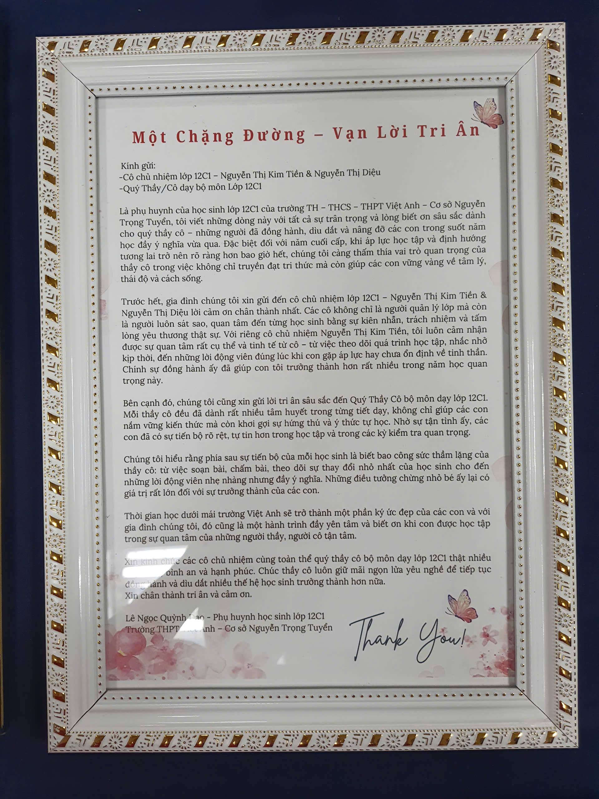

Quý Thầy/Cô dạy bộ môn Lớp 12C1
Là phụ huynh học sinh lớp 12C1, tôi viết những dòng này với tất cả sự trân trọng và lòng biết ơn sâu sắc dành cho quý thầy cô — những người đã đồng hành, dìu dắt và nâng đỡ các con trong suốt năm học đầy ý nghĩa vừa qua.
Với riêng cô chủ nhiệm Nguyễn Thị Kim Tiền, tôi luôn cảm nhận được sự quan tâm rất cụ thể và tinh tế — từ việc theo dõi quá trình học tập, nhắc nhở kịp thời, đến những lời động viên đúng lúc khi con gặp áp lực hay chưa ổn định về tinh thần. Chính sự đồng hành ấy đã giúp con tôi trưởng thành hơn rất nhiều trong năm học quan trọng này.
Bên cạnh đó, chúng tôi cũng xin gửi lời tri ân sâu sắc đến Quý Thầy Cô bộ môn dạy lớp 12C1. Mỗi thầy cô đều đã dành rất nhiều tâm huyết trong từng tiết dạy, không chỉ giúp các con nắm vững kiến thức mà còn khơi gợi sự hứng thú và ý thức tự học.
Thời gian học dưới mái trường Việt Anh sẽ trở thành một phần ký ức đẹp của các con và với gia đình chúng tôi, đó cũng là một hành trình đầy yên tâm và biết ơn.

📄 Xem thư gốcBức thư đóng khung phụ huynh gửi tặng nhà trường